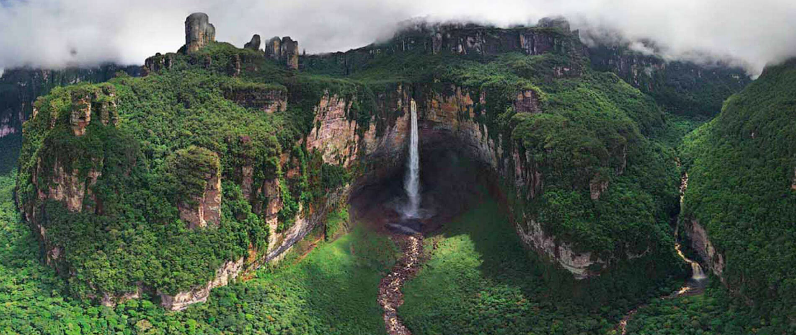

El Salto Angel
Salto Angel or Angel Falls is the world’s tallest waterfall with a height of 3,212 feet and a recognized UNESCO World Heritage site. The waterfall lies in the Canaima National Park near the northern tip of the Amazon rainforest. Angel Falls is one of Venezuela’s top tourist attractions, despite the complications involved with reaching this natural wonder. As there are no roads in the Canaima National Park the waterfall must be reached by plane. Travelers are able to buy airline tickets for around $50 in Puerto Ordaz or Ciudad Bolivar and fly on a small three-to-five seater plane to a base camp. Here, travelers are able to find humble accommodations at hotels and book tours to the falls. It is recommended that travelers visit between June November during the rainy season as this will make the falls accessible by boat.